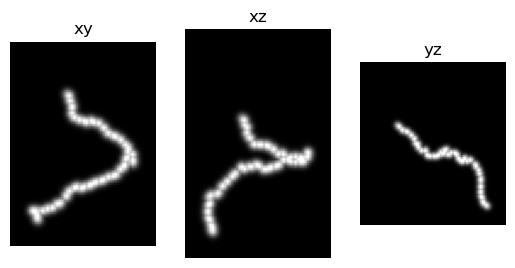
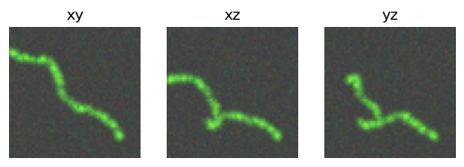
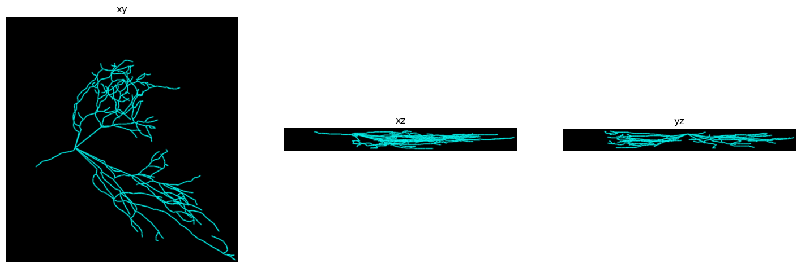
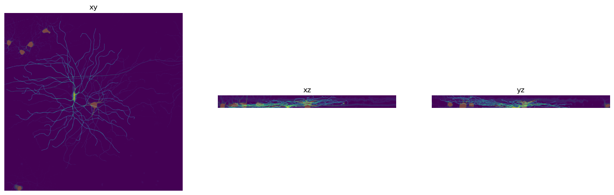
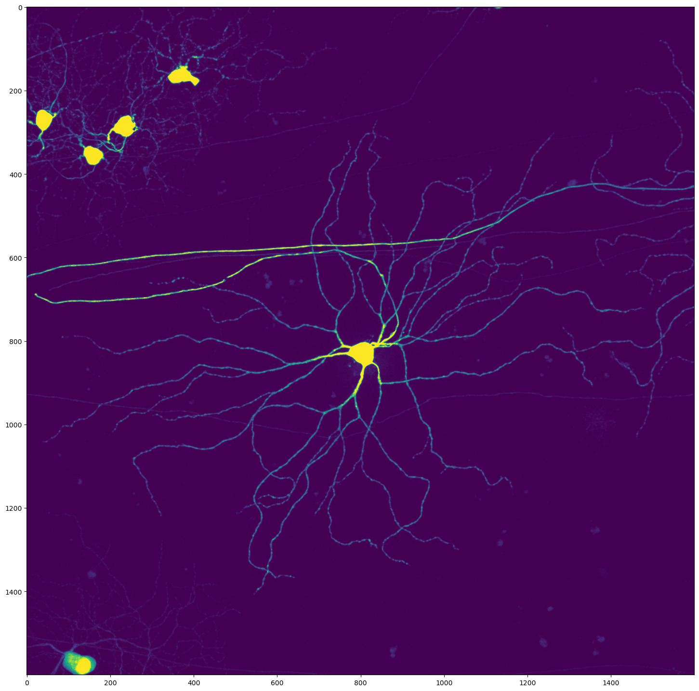

Make Simulated Neurons
[1]:
%load_ext autoreload
%autoreload 2
%matplotlib inline
[25]:
from glob import glob
import matplotlib.pyplot as plt
import numpy as np
import os
import pandas as pd
import plotly.express as px
import sys
import tifffile as tf
sys.path.append('../')
from data_prep import generate, draw, load
Generate simulated SWC file data.
This is a list of nodes, each node being a list: [sample_idx, structure_id, x, y, z, radius, parent_id]
[3]:
swc_list = generate.make_swc_list((101,101,101),
length=20,
step_size=3,
kappa=20.0,
uniform_len=False,
random_start=True,
rng=None,
num_branches=1) # make simulated neuron paths.
Set random background and foreground (neuron) colors
[4]:
random_contrast=True
if random_contrast:
neuron_color = np.random.rand(3)
neuron_color /= np.linalg.norm(neuron_color)
background = np.random.rand(3)
background = background / np.linalg.norm(background) * 0.01
Draw neurons from SWC format data; one without and one with added noise and artifacts.
[5]:
neuron_no_artifacts = draw.neuron_from_swc(swc_list,
width=3,
noise=0.0,
adjust=False,
neuron_color=None,
background_color=None,
random_brightness=False,
dropout=False,
binary=False)
neuron_with_artifacts = draw.neuron_from_swc(swc_list,
width=3,
noise=0.05,
adjust=False,
neuron_color=neuron_color,
background_color=background,
random_brightness=True,
dropout=True,
binary=False)
Draw the images.
a. Without artifacts
[17]:
img = neuron_no_artifacts["image"].data.permute(1,2,3,0)
fig, ax = plt.subplots(1,3)
ax[0].imshow(img.amax(0))
ax[0].set_title('xy')
ax[1].imshow(img.amax(1))
ax[1].set_title('xz')
ax[2].imshow(img.amax(2))
ax[2].set_title('yz')
for x in ax:
x.set_axis_off()
plt.show()

b. With artifacts
[18]:
img = neuron_with_artifacts["image"].data.permute(1,2,3,0)
fig, ax = plt.subplots(1,3)
ax[0].imshow(img.amax(0))
ax[0].set_title('xy')
ax[1].imshow(img.amax(1))
ax[1].set_title('xz')
ax[2].imshow(img.amax(2))
ax[2].set_title('yz')
for x in ax:
x.set_axis_off()
plt.show()

Simulate from existing SWC file
Load real neuron morphology data from an SWC file
[8]:
labels_dir = "/home/brysongray/data/neuromorpho/"
files = [f for x in os.walk(labels_dir) for f in glob(os.path.join(x[0], '*.swc'))]
f_idx = 4
labels_file = files[f_idx]
# load and parse the SWC file data
swc_list = load.swc(labels_file)
sections, section_graph, branches, terminals, scale = load.parse_swc_list(swc_list, adjust=True)
loading file: /home/brysongray/data/neuromorpho/quinlan/CNG version/KQa4-12-2015-tracing.CNG.swc
[84]:
# labels_file = "/home/brysongray/data/gold166/e_checked6_chick_uw/DONE_09-2902-04R-01C-60x_merge_c1/09-2902-04R-01C-60x_merge_c1.v3dpbd.swc"
labels_file = "/home/brysongray/data/gold166/e_checked6_chick_uw/DONE_case1-slide2-section1-left-cell1_merge_c2/case1-slide2-section1-left-cell1_merge_c2.v3dpbd.swc"
# load and parse the SWC file data
swc_list = load.swc(labels_file)
sections, sections_graph = load.parse_swc(swc_list)
branches, terminals = load.get_critical_points(swc_list, sections)
loading file: /home/brysongray/data/gold166/e_checked6_chick_uw/DONE_case1-slide2-section1-left-cell1_merge_c2/case1-slide2-section1-left-cell1_merge_c2.v3dpbd.swc
Plot SWC raw data
[4]:
# Create a DataFrame for plotting
data = []
# Iterate through the sections dictionary
for section_id, section_data in sections.items():
# flatten the section into one list of consecutive points instead of segments (point pairs)
for i,segment in enumerate(section_data):
point = segment[0]
data.append([section_id, point[0].item(), point[1].item(), point[2].item()])
if i == len(section_data)-1:
point = segment[1]
data.append([section_id, point[0].item(), point[1].item(), point[2].item()])
df_sections = pd.DataFrame(data, columns=["section", "x", "y", "z"])
fig = px.line_3d(df_sections, x="x", y="y", z="z", color='section', )
fig.update_layout(scene_aspectmode='data')
fig.show()
Data type cannot be displayed: application/vnd.plotly.v1+json
[23]:
# Create a DataFrame for plotting
data = []
# Iterate through the sections dictionary
for section_id, section_data in sections.items():
# flatten the section into one list of consecutive points instead of segments (point pairs)
for i,segment in enumerate(section_data):
point = segment[0]
data.append([section_id, point[0].item(), point[1].item(), point[2].item()])
if i == len(section_data)-1:
point = segment[1]
data.append([section_id, point[0].item(), point[1].item(), point[2].item()])
df_sections = pd.DataFrame(data, columns=["section", "x", "y", "z"])
fig = px.line_3d(df_sections, x="x", y="y", z="z", color='section', )
fig.update_layout(scene_aspectmode='data')
fig.show()
Data type cannot be displayed: application/vnd.plotly.v1+json
Simulate a neuron microscopy image with artifacts from the SWC data
Set random colors for the background and foreground voxels.
[4]:
random_contrast = True
rng = np.random.default_rng()
neuron_color = np.array([1.0, 1.0, 1.0])
background = np.array([0., 0., 0.])
if random_contrast:
neuron_color = rng.uniform(size=3)
neuron_color /= np.linalg.norm(neuron_color)
background_color = rng.uniform(size=3)
background_color = background_color / np.linalg.norm(background_color) * 0.01
Draw the neuron image
[5]:
swc_data = draw.neuron_from_swc(swc_list,
width=3,
noise=0.00,
dropout=False,
adjust=False,
background_color=background,
neuron_color=neuron_color,
random_brightness=False,
binary=False,
rng=rng)
Plot
[17]:
img = swc_data["image"].data.permute(1,2,3,0)
fig, ax = plt.subplots(1,3, figsize=(18,6))
ax[0].imshow(img.amax(0))
ax[0].set_title('xy')
ax[1].imshow(img.amax(1))
ax[1].set_title('xz')
ax[2].imshow(img.amax(2))
ax[2].set_title('yz')
for x in ax:
x.set_axis_off()
plt.show()

[86]:
img_path = "/home/brysongray/data/gold166_tifs/case1-slide2-section1-left-cell1_merge_c2.tif"
img = tf.imread(img_path)
shape = img.shape
# del img
sections, sections_graph = load.parse_swc(swc_list)
branches, terminals = load.get_critical_points(swc_list, sections)
segments = []
for section in sections.values():
segments.append(section)
segments = np.concatenate(segments)
density = draw.draw_neuron_density(segments, shape)
/home/brysongray/neurotrack/notebooks/../data_prep/image.py:204: UserWarning: Center tensor([ 78.0350, 603.8480, 556.5220], dtype=torch.float64) is out of bounds for image shape torch.Size([76, 1024, 1024]). Translating to the nearest valid index.
warnings.warn(f"Center {center} is out of bounds for image shape {shape}. Translating to the nearest valid index.")
/home/brysongray/neurotrack/notebooks/../data_prep/image.py:204: UserWarning: Center tensor([ 78.0350, 598.4050, 528.3160], dtype=torch.float64) is out of bounds for image shape torch.Size([76, 1024, 1024]). Translating to the nearest valid index.
warnings.warn(f"Center {center} is out of bounds for image shape {shape}. Translating to the nearest valid index.")
/home/brysongray/neurotrack/notebooks/../data_prep/image.py:204: UserWarning: Center tensor([ 78.0350, 594.4450, 517.9240], dtype=torch.float64) is out of bounds for image shape torch.Size([76, 1024, 1024]). Translating to the nearest valid index.
warnings.warn(f"Center {center} is out of bounds for image shape {shape}. Translating to the nearest valid index.")
/home/brysongray/neurotrack/notebooks/../data_prep/image.py:204: UserWarning: Center tensor([ 78.0350, 593.9520, 517.9240], dtype=torch.float64) is out of bounds for image shape torch.Size([76, 1024, 1024]). Translating to the nearest valid index.
warnings.warn(f"Center {center} is out of bounds for image shape {shape}. Translating to the nearest valid index.")
/home/brysongray/neurotrack/notebooks/../data_prep/image.py:204: UserWarning: Center tensor([ 78.0350, 592.9610, 500.6050], dtype=torch.float64) is out of bounds for image shape torch.Size([76, 1024, 1024]). Translating to the nearest valid index.
warnings.warn(f"Center {center} is out of bounds for image shape {shape}. Translating to the nearest valid index.")
/home/brysongray/neurotrack/notebooks/../data_prep/image.py:204: UserWarning: Center tensor([ 78.0350, 592.9610, 500.1100], dtype=torch.float64) is out of bounds for image shape torch.Size([76, 1024, 1024]). Translating to the nearest valid index.
warnings.warn(f"Center {center} is out of bounds for image shape {shape}. Translating to the nearest valid index.")
/home/brysongray/neurotrack/notebooks/../data_prep/image.py:204: UserWarning: Center tensor([ 76.9550, 598.4050, 476.8520], dtype=torch.float64) is out of bounds for image shape torch.Size([76, 1024, 1024]). Translating to the nearest valid index.
warnings.warn(f"Center {center} is out of bounds for image shape {shape}. Translating to the nearest valid index.")
/home/brysongray/neurotrack/notebooks/../data_prep/image.py:204: UserWarning: Center tensor([ 76.9550, 598.4050, 476.3580], dtype=torch.float64) is out of bounds for image shape torch.Size([76, 1024, 1024]). Translating to the nearest valid index.
warnings.warn(f"Center {center} is out of bounds for image shape {shape}. Translating to the nearest valid index.")
/home/brysongray/neurotrack/notebooks/../data_prep/image.py:204: UserWarning: Center tensor([ 76.9550, 598.9000, 463.9870], dtype=torch.float64) is out of bounds for image shape torch.Size([76, 1024, 1024]). Translating to the nearest valid index.
warnings.warn(f"Center {center} is out of bounds for image shape {shape}. Translating to the nearest valid index.")
/home/brysongray/neurotrack/notebooks/../data_prep/image.py:204: UserWarning: Center tensor([ 75.8760, 596.4240, 445.6780], dtype=torch.float64) is out of bounds for image shape torch.Size([76, 1024, 1024]). Translating to the nearest valid index.
warnings.warn(f"Center {center} is out of bounds for image shape {shape}. Translating to the nearest valid index.")
/home/brysongray/neurotrack/notebooks/../data_prep/image.py:204: UserWarning: Center tensor([ 76.9550, 274.7840, 333.3510], dtype=torch.float64) is out of bounds for image shape torch.Size([76, 1024, 1024]). Translating to the nearest valid index.
warnings.warn(f"Center {center} is out of bounds for image shape {shape}. Translating to the nearest valid index.")
/home/brysongray/neurotrack/notebooks/../data_prep/image.py:204: UserWarning: Center tensor([ 75.8760, 280.2270, 336.3200], dtype=torch.float64) is out of bounds for image shape torch.Size([76, 1024, 1024]). Translating to the nearest valid index.
warnings.warn(f"Center {center} is out of bounds for image shape {shape}. Translating to the nearest valid index.")
/home/brysongray/neurotrack/notebooks/../data_prep/image.py:204: UserWarning: Center tensor([ 76.9550, 209.9600, 322.9590], dtype=torch.float64) is out of bounds for image shape torch.Size([76, 1024, 1024]). Translating to the nearest valid index.
warnings.warn(f"Center {center} is out of bounds for image shape {shape}. Translating to the nearest valid index.")
/home/brysongray/neurotrack/notebooks/../data_prep/image.py:204: UserWarning: Center tensor([ 76.9550, 215.8980, 327.4130], dtype=torch.float64) is out of bounds for image shape torch.Size([76, 1024, 1024]). Translating to the nearest valid index.
warnings.warn(f"Center {center} is out of bounds for image shape {shape}. Translating to the nearest valid index.")
/home/brysongray/neurotrack/notebooks/../data_prep/image.py:204: UserWarning: Center tensor([ 76.9550, 219.8570, 332.3610], dtype=torch.float64) is out of bounds for image shape torch.Size([76, 1024, 1024]). Translating to the nearest valid index.
warnings.warn(f"Center {center} is out of bounds for image shape {shape}. Translating to the nearest valid index.")
/home/brysongray/neurotrack/notebooks/../data_prep/image.py:204: UserWarning: Center tensor([ 76.9550, 221.3420, 338.7940], dtype=torch.float64) is out of bounds for image shape torch.Size([76, 1024, 1024]). Translating to the nearest valid index.
warnings.warn(f"Center {center} is out of bounds for image shape {shape}. Translating to the nearest valid index.")
/home/brysongray/neurotrack/notebooks/../data_prep/image.py:204: UserWarning: Center tensor([ 76.9550, 231.7330, 343.2480], dtype=torch.float64) is out of bounds for image shape torch.Size([76, 1024, 1024]). Translating to the nearest valid index.
warnings.warn(f"Center {center} is out of bounds for image shape {shape}. Translating to the nearest valid index.")
/home/brysongray/neurotrack/notebooks/../data_prep/image.py:204: UserWarning: Center tensor([ 76.9550, 248.0630, 347.2070], dtype=torch.float64) is out of bounds for image shape torch.Size([76, 1024, 1024]). Translating to the nearest valid index.
warnings.warn(f"Center {center} is out of bounds for image shape {shape}. Translating to the nearest valid index.")
/home/brysongray/neurotrack/notebooks/../data_prep/image.py:204: UserWarning: Center tensor([ 76.9550, 248.5570, 347.2070], dtype=torch.float64) is out of bounds for image shape torch.Size([76, 1024, 1024]). Translating to the nearest valid index.
warnings.warn(f"Center {center} is out of bounds for image shape {shape}. Translating to the nearest valid index.")
/home/brysongray/neurotrack/notebooks/../data_prep/image.py:204: UserWarning: Center tensor([ 75.8760, 248.0630, 333.8460], dtype=torch.float64) is out of bounds for image shape torch.Size([76, 1024, 1024]). Translating to the nearest valid index.
warnings.warn(f"Center {center} is out of bounds for image shape {shape}. Translating to the nearest valid index.")
/home/brysongray/neurotrack/notebooks/../data_prep/image.py:204: UserWarning: Center tensor([ 75.8760, 249.0530, 331.8660], dtype=torch.float64) is out of bounds for image shape torch.Size([76, 1024, 1024]). Translating to the nearest valid index.
warnings.warn(f"Center {center} is out of bounds for image shape {shape}. Translating to the nearest valid index.")
/home/brysongray/neurotrack/notebooks/../data_prep/image.py:204: UserWarning: Center tensor([ 75.8760, 249.0530, 331.3710], dtype=torch.float64) is out of bounds for image shape torch.Size([76, 1024, 1024]). Translating to the nearest valid index.
warnings.warn(f"Center {center} is out of bounds for image shape {shape}. Translating to the nearest valid index.")
/home/brysongray/neurotrack/notebooks/../data_prep/image.py:204: UserWarning: Center tensor([ 75.8760, 253.5060, 325.4340], dtype=torch.float64) is out of bounds for image shape torch.Size([76, 1024, 1024]). Translating to the nearest valid index.
warnings.warn(f"Center {center} is out of bounds for image shape {shape}. Translating to the nearest valid index.")
/home/brysongray/neurotrack/notebooks/../data_prep/image.py:204: UserWarning: Center tensor([ 75.8760, 254.0000, 325.4340], dtype=torch.float64) is out of bounds for image shape torch.Size([76, 1024, 1024]). Translating to the nearest valid index.
warnings.warn(f"Center {center} is out of bounds for image shape {shape}. Translating to the nearest valid index.")
/home/brysongray/neurotrack/notebooks/../data_prep/image.py:204: UserWarning: Center tensor([ 75.8760, 263.4030, 329.8870], dtype=torch.float64) is out of bounds for image shape torch.Size([76, 1024, 1024]). Translating to the nearest valid index.
warnings.warn(f"Center {center} is out of bounds for image shape {shape}. Translating to the nearest valid index.")
/home/brysongray/neurotrack/notebooks/../data_prep/image.py:204: UserWarning: Center tensor([ 75.8760, 263.8970, 329.8870], dtype=torch.float64) is out of bounds for image shape torch.Size([76, 1024, 1024]). Translating to the nearest valid index.
warnings.warn(f"Center {center} is out of bounds for image shape {shape}. Translating to the nearest valid index.")
/home/brysongray/neurotrack/notebooks/../data_prep/image.py:204: UserWarning: Center tensor([ 75.8760, 267.8550, 337.8040], dtype=torch.float64) is out of bounds for image shape torch.Size([76, 1024, 1024]). Translating to the nearest valid index.
warnings.warn(f"Center {center} is out of bounds for image shape {shape}. Translating to the nearest valid index.")
/home/brysongray/neurotrack/notebooks/../data_prep/image.py:204: UserWarning: Center tensor([ 75.8760, 264.3920, 344.2370], dtype=torch.float64) is out of bounds for image shape torch.Size([76, 1024, 1024]). Translating to the nearest valid index.
warnings.warn(f"Center {center} is out of bounds for image shape {shape}. Translating to the nearest valid index.")
/home/brysongray/neurotrack/notebooks/../data_prep/image.py:204: UserWarning: Center tensor([ 75.8760, 278.2480, 348.6910], dtype=torch.float64) is out of bounds for image shape torch.Size([76, 1024, 1024]). Translating to the nearest valid index.
warnings.warn(f"Center {center} is out of bounds for image shape {shape}. Translating to the nearest valid index.")
/home/brysongray/neurotrack/notebooks/../data_prep/image.py:204: UserWarning: Center tensor([ 75.8760, 278.7420, 348.6910], dtype=torch.float64) is out of bounds for image shape torch.Size([76, 1024, 1024]). Translating to the nearest valid index.
warnings.warn(f"Center {center} is out of bounds for image shape {shape}. Translating to the nearest valid index.")
/home/brysongray/neurotrack/notebooks/../data_prep/image.py:204: UserWarning: Center tensor([ 75.8760, 287.1550, 348.1950], dtype=torch.float64) is out of bounds for image shape torch.Size([76, 1024, 1024]). Translating to the nearest valid index.
warnings.warn(f"Center {center} is out of bounds for image shape {shape}. Translating to the nearest valid index.")
/home/brysongray/neurotrack/notebooks/../data_prep/image.py:204: UserWarning: Center tensor([ 75.8760, 287.1550, 347.7010], dtype=torch.float64) is out of bounds for image shape torch.Size([76, 1024, 1024]). Translating to the nearest valid index.
warnings.warn(f"Center {center} is out of bounds for image shape {shape}. Translating to the nearest valid index.")
[94]:
to_remove = {}
for i in range(len(labels_files)):
swc_file = labels_files[i]
# load and parse the SWC file data
swc_list = load.swc(os.path.join(labels_dir, swc_file))
sections, sections_graph = load.parse_swc(swc_list)
segments = []
for section in sections.values():
segments.append(section)
segments = np.concatenate(segments)
if segments.max(axis=(0,1))[3] <= 1.0:
# print(i, swc_file)
to_remove[i] = swc_file
loading file: /home/brysongray/data/gold166_swc_scaled/140921c16.tif.v3dpbd.swc
loading file: /home/brysongray/data/gold166_swc_scaled/1201_01_s06b_L36_Sum_ch2.tif.v3dpbd.swc
loading file: /home/brysongray/data/gold166_swc_scaled/Image31.v3dpbd.swc
loading file: /home/brysongray/data/gold166_swc_scaled/GMR_57C10_AD_01-1xLwt_attp40_4stop1-m-A02-20111101_2_E2-right_optic_lobe.v3draw.extract_3.v3dpbd.swc
loading file: /home/brysongray/data/gold166_swc_scaled/GMR_57C10_AD_01-1xLwt_attp40_4stop1-f-A01-20110325_3_A1-right_optic_lobe.v3draw.extract_5.v3dpbd.swc
loading file: /home/brysongray/data/gold166_swc_scaled/0661_seg.v3dpbd.swc
loading file: /home/brysongray/data/gold166_swc_scaled/09-2902-04R-01C-60x_merge_c1.v3dpbd.swc
loading file: /home/brysongray/data/gold166_swc_scaled/neuron4.v3dpbd.swc
loading file: /home/brysongray/data/gold166_swc_scaled/6_1_Live_2-2-2010_11-05-38_AM_med_Red.tif_uint8.v3dpbd.swc
loading file: /home/brysongray/data/gold166_swc_scaled/ILP_PN_neuron.v3dpbd.swc
loading file: /home/brysongray/data/gold166_swc_scaled/091226c2.tif.v3dpbd.swc
loading file: /home/brysongray/data/gold166_swc_scaled/GMR_57C10_AD_01-Two_recombinase_flipouts_A-f-A-20111108_4_E3-left_optic_lobe.v3draw.extract_1.v3dpbd.swc
loading file: /home/brysongray/data/gold166_swc_scaled/1_2_Ch2.tif_uint8.v3dpbd.swc
loading file: /home/brysongray/data/gold166_swc_scaled/GMR_57C10_AD_01-Two_recombinase_flipouts_A-m-A-20111103_3_C1-right_optic_lobe.v3draw.extract_0.v3dpbd.swc
loading file: /home/brysongray/data/gold166_swc_scaled/14_3dpf_Live_1-28-2010_6-16-41_PM_med_Red.tif_uint8.v3dpbd.swc
loading file: /home/brysongray/data/gold166_swc_scaled/GMR_57C10_AD_01-Two_recombinase_flipouts_A-m-A-20111005_5_B5-left_optic_lobe.v3draw.extract_0.v3dpbd.swc
loading file: /home/brysongray/data/gold166_swc_scaled/1_1_Live_2-2-2010_9-52-24_AM_med_Red.tif_uint8.v3dpbd.swc
loading file: /home/brysongray/data/gold166_swc_scaled/GMR_57C10_AD_01-1xLwt_attp40_4stop1-f-A01-20110325_3_A4-left_optic_lobe.v3draw.extract_5.v3dpbd.swc
loading file: /home/brysongray/data/gold166_swc_scaled/GMR_57C10_AD_01-Two_recombinase_flipouts_A-m-A-20111004_3_E2-left_optic_lobe.v3draw.extract_0.v3dpbd.swc
loading file: /home/brysongray/data/gold166_swc_scaled/0984_seg.v3dpbd.swc
loading file: /home/brysongray/data/gold166_swc_scaled/SLP_PN_neuron.v3dpbd.swc
loading file: /home/brysongray/data/gold166_swc_scaled/Recon112012no3-2.v3dpbd.swc
loading file: /home/brysongray/data/gold166_swc_scaled/GMR_57C10_AD_01-1xLwt_attp40_4stop1-f-A01-20110325_3_A3-left_optic_lobe.v3draw.extract_1.v3dpbd.swc
loading file: /home/brysongray/data/gold166_swc_scaled/3_CL-I_MT_X_MYR-GFP_ddaD_MT-mCherry_membrane-GFP.czi_C_1.tif.v3dpbd.swc
loading file: /home/brysongray/data/gold166_swc_scaled/0664_seg.v3dpbd.swc
loading file: /home/brysongray/data/gold166_swc_scaled/GMR_57C10_AD_01-1xLwt_attp40_4stop1-f-A01-20110325_3_A5-left_optic_lobe.v3draw.extract_2.v3dpbd.swc
loading file: /home/brysongray/data/gold166_swc_scaled/Series009.v3dpbd.swc
loading file: /home/brysongray/data/gold166_swc_scaled/GMR_57C10_AD_01-Two_recombinase_flipouts_A-f-A-20111108_4_G2-right_optic_lobe.v3draw.extract_1.v3dpbd.swc
loading file: /home/brysongray/data/gold166_swc_scaled/GMR_57C10_AD_01-1xLwt_attp40_4stop1-m-A02-20111101_2_E2-left_optic_lobe.v3draw.extract_4.v3dpbd.swc
loading file: /home/brysongray/data/gold166_swc_scaled/GMR_57C10_AD_01-1xLwt_attp40_4stop1-m-A02-20111101_2_E1-right_optic_lobe.v3draw.extract_9.v3dpbd.swc
loading file: /home/brysongray/data/gold166_swc_scaled/140918c7.tif.v3dpbd.swc
loading file: /home/brysongray/data/gold166_swc_scaled/Image4.v3dpbd.swc
loading file: /home/brysongray/data/gold166_swc_scaled/GMR_57C10_AD_01-1xLwt_attp40_4stop1-f-A01-20110325_3_A3-right_optic_lobe.v3draw.extract_3.v3dpbd.swc
loading file: /home/brysongray/data/gold166_swc_scaled/uint8_ChaMARCM-F000095_seg001.lsm_c_3.tif.v3dpbd.swc
loading file: /home/brysongray/data/gold166_swc_scaled/GMR_57C10_AD_01-Two_recombinase_flipouts_A-m-A-20111005_4_B1-right_optic_lobe.v3draw.extract_0.v3dpbd.swc
loading file: /home/brysongray/data/gold166_swc_scaled/GMR_57C10_AD_01-Two_recombinase_flipouts_A-f-A-20111108_2_B3-right_optic_lobe.v3draw.extract_5.v3dpbd.swc
loading file: /home/brysongray/data/gold166_swc_scaled/AL_GNG_LH_neuron.v3dpbd.swc
loading file: /home/brysongray/data/gold166_swc_scaled/GMR_57C10_AD_01-Two_recombinase_flipouts_A-f-A-20111028_4_A5-right_optic_lobe.v3draw.extract_0.v3dpbd.swc
loading file: /home/brysongray/data/gold166_swc_scaled/uint8_ChaMARCM-F000106_seg001.lsm_c_3.tif.v3dpbd.swc
loading file: /home/brysongray/data/gold166_swc_scaled/GMR_57C10_AD_01-Two_recombinase_flipouts_A-m-A-20111103_3_D1-left_optic_lobe.v3draw.extract_0.v3dpbd.swc
loading file: /home/brysongray/data/gold166_swc_scaled/GMR_57C10_AD_01-1xLwt_attp40_4stop1-x-A02-20110612_1_B1-right_optic_lobe.v3draw.extract_7.v3dpbd.swc
loading file: /home/brysongray/data/gold166_swc_scaled/1_CL-I_X_OREGON_R_ddaD_membrane-GFP.tif.v3dpbd.swc
loading file: /home/brysongray/data/gold166_swc_scaled/GMR_57C10_AD_01-1xLwt_attp40_4stop1-f-A01-20110325_3_C7-left_optic_lobe.v3draw.extract_3.v3dpbd.swc
loading file: /home/brysongray/data/gold166_swc_scaled/140918c3.tif.v3dpbd.swc
loading file: /home/brysongray/data/gold166_swc_scaled/1_3dpf_Live_1-28-2010_2-32-58_PM_med_Green.tif_uint8.v3dpbd.swc
loading file: /home/brysongray/data/gold166_swc_scaled/slice12_4to51_ch2.tif.v3dpbd.neuron1.swc
loading file: /home/brysongray/data/gold166_swc_scaled/uint8_ChaMARCM-F000134_seg002.lsm_c_3.tif.v3dpbd.swc
loading file: /home/brysongray/data/gold166_swc_scaled/GMR_57C10_AD_01-Two_recombinase_flipouts_A-f-A-20111005_1_B5-left_optic_lobe.v3draw.extract_3.v3dpbd.swc
loading file: /home/brysongray/data/gold166_swc_scaled/2_CL-I_Membrane-GFP_X_F-Actin-Red_ddaD_Membrane-GFP_F-Actin-Red.czi_C_1.tif.v3dpbd.swc
loading file: /home/brysongray/data/gold166_swc_scaled/GMR_57C10_AD_01-1xLwt_attp40_4stop1-m-A02-20111101_2_D2-right_optic_lobe.v3draw.extract_0.v3dpbd.swc
loading file: /home/brysongray/data/gold166_swc_scaled/GMR_57C10_AD_01-Two_recombinase_flipouts_A-m-A-20111006_1_E1-right_optic_lobe.v3draw.extract_4.v3dpbd.swc
loading file: /home/brysongray/data/gold166_swc_scaled/uint8_ChaMARCM-F000138_seg002.lsm_c_3.tif.v3dpbd.swc
loading file: /home/brysongray/data/gold166_swc_scaled/0663_seg.v3dpbd.swc
loading file: /home/brysongray/data/gold166_swc_scaled/uint8_ChaMARCM-F000135_seg001.lsm_c_3.tif.v3dpbd.swc
loading file: /home/brysongray/data/gold166_swc_scaled/GMR_57C10_AD_01-Two_recombinase_flipouts_A-f-A-20111108_1_C4-right_optic_lobe.v3draw.extract_3.v3dpbd.swc
loading file: /home/brysongray/data/gold166_swc_scaled/GMR_57C10_AD_01-Two_recombinase_flipouts_A-f-A-20111107_2_C5-right_optic_lobe.v3draw.extract_0.v3dpbd.swc
loading file: /home/brysongray/data/gold166_swc_scaled/1_8_Ch2.tif_uint8.v3dpbd.swc
loading file: /home/brysongray/data/gold166_swc_scaled/100108c3.tif.v3dpbd.swc
loading file: /home/brysongray/data/gold166_swc_scaled/3_CL-IV_x_Ank2-IR_ddaC_membrane-B.tif.v3dpbd.swc
loading file: /home/brysongray/data/gold166_swc_scaled/GMR_57C10_AD_01-Two_recombinase_flipouts_A-m-A-20110929_1_B4-left_optic_lobe.v3draw.extract_1.v3dpbd.swc
loading file: /home/brysongray/data/gold166_swc_scaled/GMR_57C10_AD_01-Two_recombinase_flipouts_A-m-A-20111103_3_F3-right_optic_lobe.v3draw.extract_10.v3dpbd.swc
loading file: /home/brysongray/data/gold166_swc_scaled/1_10_Ch2.tif_uint8.v3dpbd.swc
loading file: /home/brysongray/data/gold166_swc_scaled/uint8_ChaMARCM-F000069_seg001.lsm_c_3.tif.v3dpbd.swc
loading file: /home/brysongray/data/gold166_swc_scaled/uint8_ChaMARCM-F000094_seg001.lsm_c_3.tif.v3dpbd.swc
loading file: /home/brysongray/data/gold166_swc_scaled/140918c8.tif.v3dpbd.swc
loading file: /home/brysongray/data/gold166_swc_scaled/uint8_ChaMARCM-F000146_seg001.lsm_c_3.tif.v3dpbd.swc
loading file: /home/brysongray/data/gold166_swc_scaled/140921c9.tif.v3dpbd.swc
loading file: /home/brysongray/data/gold166_swc_scaled/Series017.v3dpbd.swc
loading file: /home/brysongray/data/gold166_swc_scaled/uint8_ChaMARCM-F000139_seg001.lsm_c_3.tif.v3dpbd.swc
loading file: /home/brysongray/data/gold166_swc_scaled/uint8_ChaMARCM-F000140_seg001.lsm_c_3.tif.v3dpbd.swc
loading file: /home/brysongray/data/gold166_swc_scaled/GMR_57C10_AD_01-1xLwt_attp40_4stop1-f-A01-20110325_3_B2-left_optic_lobe.v3draw.extract_6.v3dpbd.swc
loading file: /home/brysongray/data/gold166_swc_scaled/110203c3.tif.v3dpbd.swc
loading file: /home/brysongray/data/gold166_swc_scaled/GMR_57C10_AD_01-Two_recombinase_flipouts_A-m-A-20111006_1_A4-right_optic_lobe.v3draw.extract_0.v3dpbd.swc
loading file: /home/brysongray/data/gold166_swc_scaled/GMR_57C10_AD_01-1xLwt_attp40_4stop1-f-A01-20110928_6_E1-left_optic_lobe.v3draw.extract_5.v3dpbd.swc
loading file: /home/brysongray/data/gold166_swc_scaled/uint8_ChaMARCM-F000126_seg001.lsm_c_3.tif.v3dpbd.swc
loading file: /home/brysongray/data/gold166_swc_scaled/120111_05new_ch2.tif.v3dpbd.neuron1.swc
loading file: /home/brysongray/data/gold166_swc_scaled/GMR_57C10_AD_01-1xLwt_attp40_4stop1-f-A01-20110325_3_A7-right_optic_lobe.v3draw.extract_2.v3dpbd.swc
loading file: /home/brysongray/data/gold166_swc_scaled/1_CL-I_X_OREGON_R_ddaE_membrane-GFP.tif.v3dpbd.swc
loading file: /home/brysongray/data/gold166_swc_scaled/3_CL-III_X_LifeActRuby_vpda_membrane-GFP_actin-LifeActRuby.czi_C_1.tif_uint8.v3dpbd.swc
loading file: /home/brysongray/data/gold166_swc_scaled/10-2900-control-cell-05.oif-C0.v3dpbd.swc
loading file: /home/brysongray/data/gold166_swc_scaled/1_CL-III_X_LifeActRuby_vpda_membrane-GFP_actin-LifeActRuby.czi-C_1.tif_uint8.v3dpbd.swc
loading file: /home/brysongray/data/gold166_swc_scaled/GMR_57C10_AD_01-Two_recombinase_flipouts_A-f-A-20111103_2_D3-left_optic_lobe.v3draw.extract_0.v3dpbd.swc
loading file: /home/brysongray/data/gold166_swc_scaled/uint8_ChaMARCM-F000134_seg001.lsm_c_3.tif.v3dpbd.swc
loading file: /home/brysongray/data/gold166_swc_scaled/091202c2.tif.v3dpbd.swc
loading file: /home/brysongray/data/gold166_swc_scaled/0965_seg.v3dpbd.swc
loading file: /home/brysongray/data/gold166_swc_scaled/mushroom_body_ab_cell_neuron.v3dpbd.swc
loading file: /home/brysongray/data/gold166_swc_scaled/10-2909-s5-left-cell3_merge_c2.v3dpbd.swc
loading file: /home/brysongray/data/gold166_swc_scaled/lAPT_PN1_neuron.v3dpbd.swc
loading file: /home/brysongray/data/gold166_swc_scaled/2_CL-I_Membrane-GFP_X_F-Actin-Red_ddaE_Membrane-GFP_F-Actin-Red.czi_C_1.tif.v3dpbd.swc
loading file: /home/brysongray/data/gold166_swc_scaled/Series021.v3dpbd.swc
loading file: /home/brysongray/data/gold166_swc_scaled/fix-P7-4.5h-cell2-60x-zoom1.5_merge_c2.v3dpbd.swc
loading file: /home/brysongray/data/gold166_swc_scaled/091201c1.tif.v3dpbd.swc
loading file: /home/brysongray/data/gold166_swc_scaled/140921c12.tif.v3dpbd.swc
loading file: /home/brysongray/data/gold166_swc_scaled/GMR_57C10_AD_01-1xLwt_attp40_4stop1-f-A01-20110325_3_A6-left_optic_lobe.v3draw.extract_2.v3dpbd.swc
loading file: /home/brysongray/data/gold166_swc_scaled/GMR_57C10_AD_01-1xLwt_attp40_4stop1-m-A02-20111101_1_D1-right_optic_lobe.v3draw.extract_9.v3dpbd.swc
loading file: /home/brysongray/data/gold166_swc_scaled/GMR_57C10_AD_01-Two_recombinase_flipouts_A-m-A-20111005_4_C6-right_optic_lobe.v3draw.extract_0.v3dpbd.swc
loading file: /home/brysongray/data/gold166_swc_scaled/GMR_57C10_AD_01-1xLwt_attp40_4stop1-m-A02-20111101_2_C1-left_optic_lobe.v3draw.extract_2.v3dpbd.swc
loading file: /home/brysongray/data/gold166_swc_scaled/slice12_4to51_ch2.tif.v3dpbd.neuron2.swc
loading file: /home/brysongray/data/gold166_swc_scaled/140918c9.tif.v3dpbd.swc
loading file: /home/brysongray/data/gold166_swc_scaled/140921c22.tif.v3dpbd.swc
loading file: /home/brysongray/data/gold166_swc_scaled/091204c2.tif.v3dpbd.swc
loading file: /home/brysongray/data/gold166_swc_scaled/1_5dpf_Live_1-30-2010_12-39-26_PM_med_Red.tif_uint8.v3dpbd.swc
loading file: /home/brysongray/data/gold166_swc_scaled/140921c5.tif.v3dpbd.swc
loading file: /home/brysongray/data/gold166_swc_scaled/uint8_ChaMARCM-F000007_seg001.lsm_c_3.tif.v3dpbd.swc
loading file: /home/brysongray/data/gold166_swc_scaled/case1-slide2-section1-left-cell1_merge_c2.v3dpbd.swc
loading file: /home/brysongray/data/gold166_swc_scaled/GMR_57C10_AD_01-1xLwt_attp40_4stop1-x-A02-20110411_1_D4-left_optic_lobe.v3draw.extract_8.v3dpbd.swc
loading file: /home/brysongray/data/gold166_swc_scaled/100110c4.tif.v3dpbd.swc
loading file: /home/brysongray/data/gold166_swc_scaled/10-2912-s1-cell1_merge_c2.v3dpbd.swc
loading file: /home/brysongray/data/gold166_swc_scaled/080926a.tif.v3dpbd.swc
loading file: /home/brysongray/data/gold166_swc_scaled/uint8_ChaMARCM-F000096_seg001.lsm_c_3.tif.v3dpbd.swc
loading file: /home/brysongray/data/gold166_swc_scaled/GMR_57C10_AD_01-Two_recombinase_flipouts_A-f-A-20110929_1_D1-left_optic_lobe.v3draw.extract_0.v3dpbd.swc
loading file: /home/brysongray/data/gold166_swc_scaled/uint8_ChaMARCM-F000157_seg001.lsm_c_3.tif.v3dpbd.swc
loading file: /home/brysongray/data/gold166_swc_scaled/uint8_ChaMARCM-F000144_seg001.lsm_c_3.tif.v3dpbd.swc
loading file: /home/brysongray/data/gold166_swc_scaled/uint8_ChaMARCM-F000138_seg001.lsm_c_3.tif.v3dpbd.swc
loading file: /home/brysongray/data/gold166_swc_scaled/Recon112012no2-2.v3dpbd.swc
loading file: /home/brysongray/data/gold166_swc_scaled/10_3dpf_Live_1-28-2010_5-20-37_PM_med_Red.tif_uint8.v3dpbd.swc
loading file: /home/brysongray/data/gold166_swc_scaled/GMR_57C10_AD_01-1xLwt_attp40_4stop1-m-A02-20111101_2_F3-left_optic_lobe.v3draw.extract_6.v3dpbd.swc
loading file: /home/brysongray/data/gold166_swc_scaled/GMR_57C10_AD_01-1xLwt_attp40_4stop1-f-A01-20110325_3_B1-left_optic_lobe.v3draw.extract_3.v3dpbd.swc
loading file: /home/brysongray/data/gold166_swc_scaled/WED_SLP_PN_neuron.v3dpbd.swc
loading file: /home/brysongray/data/gold166_swc_scaled/GMR_57C10_AD_01-Two_recombinase_flipouts_A-f-A-20111108_2_F3-right_optic_lobe.v3draw.extract_0.v3dpbd.swc
loading file: /home/brysongray/data/gold166_swc_scaled/uint8_ChaMARCM-F000006_seg002.lsm_c_3.tif.v3dpbd.swc
loading file: /home/brysongray/data/gold166_swc_scaled/uint8_ChaMARCM-F000142_seg001.lsm_c_3.tif.v3dpbd.swc
loading file: /home/brysongray/data/gold166_swc_scaled/GMR_57C10_AD_01-1xLwt_attp40_4stop1-m-A02-20111101_2_E4-right_optic_lobe.v3draw.extract_2.v3dpbd.swc
loading file: /home/brysongray/data/gold166_swc_scaled/140921c14.tif.v3dpbd.swc
loading file: /home/brysongray/data/gold166_swc_scaled/1201_01_s10mm_ch2.tif.v3dpbd.swc
loading file: /home/brysongray/data/gold166_swc_scaled/3_CL-I_MT_X_MYR-GFP_ddaE_MT-mCherry_membrane-GFP.czi_C_1.tif.v3dpbd.swc
loading file: /home/brysongray/data/gold166_swc_scaled/140921c3.tif.v3dpbd.swc
loading file: /home/brysongray/data/gold166_swc_scaled/0986_seg.v3dpbd.swc
loading file: /home/brysongray/data/gold166_swc_scaled/Series019.v3dpbd.swc
loading file: /home/brysongray/data/gold166_swc_scaled/GMR_57C10_AD_01-1xLwt_attp40_4stop1-f-A01-20110325_3_B2-right_optic_lobe.v3draw.extract_2.v3dpbd.swc
loading file: /home/brysongray/data/gold166_swc_scaled/140921c4.tif.v3dpbd.swc
loading file: /home/brysongray/data/gold166_swc_scaled/1_9_Ch2.tif_uint8.v3dpbd.swc
loading file: /home/brysongray/data/gold166_swc_scaled/1_6_Ch2.tif_uint8.v3dpbd.swc
loading file: /home/brysongray/data/gold166_swc_scaled/12_3dpf_Live_1-28-2010_5-47-24_PM_med_Red.tif_uint8.v3dpbd.swc
loading file: /home/brysongray/data/gold166_swc_scaled/uint8_ChaMARCM-F000141_seg001.lsm_c_3.tif.v3dpbd.swc
loading file: /home/brysongray/data/gold166_swc_scaled/140921c6.tif.v3dpbd.swc
loading file: /home/brysongray/data/gold166_swc_scaled/140921c1.tif.v3dpbd.swc
[95]:
for key, value in to_remove.items():
print(key, value)
1 1201_01_s06b_L36_Sum_ch2.tif.v3dpbd.swc
8 6_1_Live_2-2-2010_11-05-38_AM_med_Red.tif_uint8.v3dpbd.swc
12 1_2_Ch2.tif_uint8.v3dpbd.swc
16 1_1_Live_2-2-2010_9-52-24_AM_med_Red.tif_uint8.v3dpbd.swc
45 slice12_4to51_ch2.tif.v3dpbd.neuron1.swc
61 1_10_Ch2.tif_uint8.v3dpbd.swc
75 120111_05new_ch2.tif.v3dpbd.neuron1.swc
86 10-2909-s5-left-cell3_merge_c2.v3dpbd.swc
97 slice12_4to51_ch2.tif.v3dpbd.neuron2.swc
104 case1-slide2-section1-left-cell1_merge_c2.v3dpbd.swc
107 10-2912-s1-cell1_merge_c2.v3dpbd.swc
115 10_3dpf_Live_1-28-2010_5-20-37_PM_med_Red.tif_uint8.v3dpbd.swc
131 1_9_Ch2.tif_uint8.v3dpbd.swc
133 12_3dpf_Live_1-28-2010_5-47-24_PM_med_Red.tif_uint8.v3dpbd.swc
[97]:
import os
import shutil
# move files in to_remove to different folder
# Create a destination folder for files with small radius
labels_dir = "/home/brysongray/data/gold166_swc_scaled/"
img_dir = os.path.expanduser("~/data/gold166_tifs_scaled/")
dest_dir = "/home/brysongray/data/gold166_swc_scaled_removed/"
img_files = os.listdir(img_dir)
img_dest_dir = "/home/brysongray/data/gold166_tifs_scaled_removed/"
# Move files from to_remove dictionary to the destination folder
for idx, filename in to_remove.items():
source_path = os.path.join(labels_dir, filename)
dest_path = os.path.join(dest_dir, filename)
img_name = [f for f in img_files if f.split(".")[0] in filename][0]
img_source_path = os.path.join(img_dir, img_name)
img_dest_path = os.path.join(img_dest_dir, img_name)
# Check if the source file exists
if os.path.exists(source_path):
# Move the file
shutil.move(source_path, dest_path)
print(f"Moved file {idx}: {filename}")
else:
print(f"File not found: {source_path}")
if os.path.exists(img_source_path):
shutil.move(img_source_path, img_dest_path)
print(f"Moved file {img_name}")
else:
print(f"File not found: {img_name}")
print(f"Moved {len(to_remove)} files to {dest_dir}")
File not found: /home/brysongray/data/gold166_swc_scaled/1201_01_s06b_L36_Sum_ch2.tif.v3dpbd.swc
Moved file 1201_01_s06b_L36_Sum_ch2.tif
File not found: /home/brysongray/data/gold166_swc_scaled/6_1_Live_2-2-2010_11-05-38_AM_med_Red.tif_uint8.v3dpbd.swc
Moved file 6_1_Live_2-2-2010_11-05-38_AM_med_Red.tif
File not found: /home/brysongray/data/gold166_swc_scaled/1_2_Ch2.tif_uint8.v3dpbd.swc
Moved file 1_2_Ch2.tif
File not found: /home/brysongray/data/gold166_swc_scaled/1_1_Live_2-2-2010_9-52-24_AM_med_Red.tif_uint8.v3dpbd.swc
Moved file 1_1_Live_2-2-2010_9-52-24_AM_med_Red.tif
File not found: /home/brysongray/data/gold166_swc_scaled/slice12_4to51_ch2.tif.v3dpbd.neuron1.swc
Moved file slice12_4to51_ch2.tif
File not found: /home/brysongray/data/gold166_swc_scaled/1_10_Ch2.tif_uint8.v3dpbd.swc
Moved file 1_10_Ch2.tif
File not found: /home/brysongray/data/gold166_swc_scaled/120111_05new_ch2.tif.v3dpbd.neuron1.swc
Moved file 120111_05new_ch2.tif
File not found: /home/brysongray/data/gold166_swc_scaled/10-2909-s5-left-cell3_merge_c2.v3dpbd.swc
Moved file 10-2909-s5-left-cell3_merge_c2.tif
File not found: /home/brysongray/data/gold166_swc_scaled/slice12_4to51_ch2.tif.v3dpbd.neuron2.swc
File not found: slice12_4to51_ch2.tif
File not found: /home/brysongray/data/gold166_swc_scaled/case1-slide2-section1-left-cell1_merge_c2.v3dpbd.swc
Moved file case1-slide2-section1-left-cell1_merge_c2.tif
File not found: /home/brysongray/data/gold166_swc_scaled/10-2912-s1-cell1_merge_c2.v3dpbd.swc
Moved file 10-2912-s1-cell1_merge_c2.tif
File not found: /home/brysongray/data/gold166_swc_scaled/10_3dpf_Live_1-28-2010_5-20-37_PM_med_Red.tif_uint8.v3dpbd.swc
Moved file 10_3dpf_Live_1-28-2010_5-20-37_PM_med_Red.tif
File not found: /home/brysongray/data/gold166_swc_scaled/1_9_Ch2.tif_uint8.v3dpbd.swc
Moved file 1_9_Ch2.tif
File not found: /home/brysongray/data/gold166_swc_scaled/12_3dpf_Live_1-28-2010_5-47-24_PM_med_Red.tif_uint8.v3dpbd.swc
Moved file 12_3dpf_Live_1-28-2010_5-47-24_PM_med_Red.tif
Moved 14 files to /home/brysongray/data/gold166_swc_scaled_removed/
[115]:
# labels_file = "/home/brysongray/data/gold166/e_checked6_chick_uw/DONE_case1-slide2-section1-left-cell1_merge_c2/case1-slide2-section1-left-cell1_merge_c2.v3dpbd.swc"
labels_dir = "/home/brysongray/data/gold166_swc_scaled/"
img_dir = os.path.expanduser("~/data/gold166_tifs_scaled/")
labels_files = os.listdir(labels_dir)
labels_files = sorted(labels_files)
img_files = os.listdir(img_dir)
img_files = sorted(img_files)
# for i in range(len(labels_files)):
i = 22
swc_file = labels_files[i]
img_file = [f for f in img_files if f.split('.')[0] in swc_file][0]
print(i, f"swc file: {swc_file}")
print(f"image file: {img_file}")
# load and parse the SWC file data
swc_list = load.swc(os.path.join(labels_dir, swc_file))
sections, sections_graph = load.parse_swc(swc_list)
branches, terminals = load.get_critical_points(swc_list, sections)
segments = []
for section in sections.values():
segments.append(section)
segments = np.concatenate(segments)
print(segments.max(axis=(0,1))[3])
img = tf.imread(os.path.join(img_dir, img_file))
shape = img.shape
density = draw.draw_neuron_density(segments, shape)
22 swc file: 140921c12.tif.v3dpbd.swc
image file: 140921c1.tif
loading file: /home/brysongray/data/gold166_swc_scaled/140921c12.tif.v3dpbd.swc
20.0
/home/brysongray/neurotrack/notebooks/../data_prep/image.py:204: UserWarning: Center tensor([124.2633, 505.3530, 9.4652], dtype=torch.float64) is out of bounds for image shape torch.Size([112, 1600, 1600]). Translating to the nearest valid index.
warnings.warn(f"Center {center} is out of bounds for image shape {shape}. Translating to the nearest valid index.")
/home/brysongray/neurotrack/notebooks/../data_prep/image.py:204: UserWarning: Center tensor([127.7915, 503.3800, 14.1642], dtype=torch.float64) is out of bounds for image shape torch.Size([112, 1600, 1600]). Translating to the nearest valid index.
warnings.warn(f"Center {center} is out of bounds for image shape {shape}. Translating to the nearest valid index.")
/home/brysongray/neurotrack/notebooks/../data_prep/image.py:204: UserWarning: Center tensor([131.5894, 500.5740, 20.9347], dtype=torch.float64) is out of bounds for image shape torch.Size([112, 1600, 1600]). Translating to the nearest valid index.
warnings.warn(f"Center {center} is out of bounds for image shape {shape}. Translating to the nearest valid index.")
/home/brysongray/neurotrack/notebooks/../data_prep/image.py:204: UserWarning: Center tensor([132.0145, 498.6950, 27.2997], dtype=torch.float64) is out of bounds for image shape torch.Size([112, 1600, 1600]). Translating to the nearest valid index.
warnings.warn(f"Center {center} is out of bounds for image shape {shape}. Translating to the nearest valid index.")
/home/brysongray/neurotrack/notebooks/../data_prep/image.py:204: UserWarning: Center tensor([132.8939, 497.1090, 32.6371], dtype=torch.float64) is out of bounds for image shape torch.Size([112, 1600, 1600]). Translating to the nearest valid index.
warnings.warn(f"Center {center} is out of bounds for image shape {shape}. Translating to the nearest valid index.")
/home/brysongray/neurotrack/notebooks/../data_prep/image.py:204: UserWarning: Center tensor([132.7567, 495.7590, 38.6407], dtype=torch.float64) is out of bounds for image shape torch.Size([112, 1600, 1600]). Translating to the nearest valid index.
warnings.warn(f"Center {center} is out of bounds for image shape {shape}. Translating to the nearest valid index.")
/home/brysongray/neurotrack/notebooks/../data_prep/image.py:204: UserWarning: Center tensor([133.1109, 494.6480, 43.9728], dtype=torch.float64) is out of bounds for image shape torch.Size([112, 1600, 1600]). Translating to the nearest valid index.
warnings.warn(f"Center {center} is out of bounds for image shape {shape}. Translating to the nearest valid index.")
/home/brysongray/neurotrack/notebooks/../data_prep/image.py:204: UserWarning: Center tensor([132.7539, 493.3370, 49.2098], dtype=torch.float64) is out of bounds for image shape torch.Size([112, 1600, 1600]). Translating to the nearest valid index.
warnings.warn(f"Center {center} is out of bounds for image shape {shape}. Translating to the nearest valid index.")
/home/brysongray/neurotrack/notebooks/../data_prep/image.py:204: UserWarning: Center tensor([132.9136, 491.8910, 55.2090], dtype=torch.float64) is out of bounds for image shape torch.Size([112, 1600, 1600]). Translating to the nearest valid index.
warnings.warn(f"Center {center} is out of bounds for image shape {shape}. Translating to the nearest valid index.")
/home/brysongray/neurotrack/notebooks/../data_prep/image.py:204: UserWarning: Center tensor([132.0500, 489.6770, 60.5894], dtype=torch.float64) is out of bounds for image shape torch.Size([112, 1600, 1600]). Translating to the nearest valid index.
warnings.warn(f"Center {center} is out of bounds for image shape {shape}. Translating to the nearest valid index.")
/home/brysongray/neurotrack/notebooks/../data_prep/image.py:204: UserWarning: Center tensor([133.1333, 486.9490, 66.8370], dtype=torch.float64) is out of bounds for image shape torch.Size([112, 1600, 1600]). Translating to the nearest valid index.
warnings.warn(f"Center {center} is out of bounds for image shape {shape}. Translating to the nearest valid index.")
/home/brysongray/neurotrack/notebooks/../data_prep/image.py:204: UserWarning: Center tensor([133.9827, 486.2290, 73.0655], dtype=torch.float64) is out of bounds for image shape torch.Size([112, 1600, 1600]). Translating to the nearest valid index.
warnings.warn(f"Center {center} is out of bounds for image shape {shape}. Translating to the nearest valid index.")
/home/brysongray/neurotrack/notebooks/../data_prep/image.py:204: UserWarning: Center tensor([130.3394, 485.5430, 78.3314], dtype=torch.float64) is out of bounds for image shape torch.Size([112, 1600, 1600]). Translating to the nearest valid index.
warnings.warn(f"Center {center} is out of bounds for image shape {shape}. Translating to the nearest valid index.")
/home/brysongray/neurotrack/notebooks/../data_prep/image.py:204: UserWarning: Center tensor([133.3333, 482.8400, 85.2070], dtype=torch.float64) is out of bounds for image shape torch.Size([112, 1600, 1600]). Translating to the nearest valid index.
warnings.warn(f"Center {center} is out of bounds for image shape {shape}. Translating to the nearest valid index.")
/home/brysongray/neurotrack/notebooks/../data_prep/image.py:204: UserWarning: Center tensor([133.3333, 482.3250, 95.1758], dtype=torch.float64) is out of bounds for image shape torch.Size([112, 1600, 1600]). Translating to the nearest valid index.
warnings.warn(f"Center {center} is out of bounds for image shape {shape}. Translating to the nearest valid index.")
/home/brysongray/neurotrack/notebooks/../data_prep/image.py:204: UserWarning: Center tensor([133.3333, 479.4050, 104.7070], dtype=torch.float64) is out of bounds for image shape torch.Size([112, 1600, 1600]). Translating to the nearest valid index.
warnings.warn(f"Center {center} is out of bounds for image shape {shape}. Translating to the nearest valid index.")
/home/brysongray/neurotrack/notebooks/../data_prep/image.py:204: UserWarning: Center tensor([133.3333, 478.0730, 114.5690], dtype=torch.float64) is out of bounds for image shape torch.Size([112, 1600, 1600]). Translating to the nearest valid index.
warnings.warn(f"Center {center} is out of bounds for image shape {shape}. Translating to the nearest valid index.")
/home/brysongray/neurotrack/notebooks/../data_prep/image.py:204: UserWarning: Center tensor([133.3333, 477.7650, 124.5630], dtype=torch.float64) is out of bounds for image shape torch.Size([112, 1600, 1600]). Translating to the nearest valid index.
warnings.warn(f"Center {center} is out of bounds for image shape {shape}. Translating to the nearest valid index.")
/home/brysongray/neurotrack/notebooks/../data_prep/image.py:204: UserWarning: Center tensor([133.3333, 477.3780, 134.5440], dtype=torch.float64) is out of bounds for image shape torch.Size([112, 1600, 1600]). Translating to the nearest valid index.
warnings.warn(f"Center {center} is out of bounds for image shape {shape}. Translating to the nearest valid index.")
/home/brysongray/neurotrack/notebooks/../data_prep/image.py:204: UserWarning: Center tensor([133.3333, 474.9540, 144.2030], dtype=torch.float64) is out of bounds for image shape torch.Size([112, 1600, 1600]). Translating to the nearest valid index.
warnings.warn(f"Center {center} is out of bounds for image shape {shape}. Translating to the nearest valid index.")
/home/brysongray/neurotrack/notebooks/../data_prep/image.py:204: UserWarning: Center tensor([133.3333, 473.0460, 153.9330], dtype=torch.float64) is out of bounds for image shape torch.Size([112, 1600, 1600]). Translating to the nearest valid index.
warnings.warn(f"Center {center} is out of bounds for image shape {shape}. Translating to the nearest valid index.")
/home/brysongray/neurotrack/notebooks/../data_prep/image.py:204: UserWarning: Center tensor([133.3333, 472.6280, 163.9220], dtype=torch.float64) is out of bounds for image shape torch.Size([112, 1600, 1600]). Translating to the nearest valid index.
warnings.warn(f"Center {center} is out of bounds for image shape {shape}. Translating to the nearest valid index.")
/home/brysongray/neurotrack/notebooks/../data_prep/image.py:204: UserWarning: Center tensor([133.3333, 472.5370, 173.9220], dtype=torch.float64) is out of bounds for image shape torch.Size([112, 1600, 1600]). Translating to the nearest valid index.
warnings.warn(f"Center {center} is out of bounds for image shape {shape}. Translating to the nearest valid index.")
/home/brysongray/neurotrack/notebooks/../data_prep/image.py:204: UserWarning: Center tensor([133.3333, 472.4520, 183.9180], dtype=torch.float64) is out of bounds for image shape torch.Size([112, 1600, 1600]). Translating to the nearest valid index.
warnings.warn(f"Center {center} is out of bounds for image shape {shape}. Translating to the nearest valid index.")
/home/brysongray/neurotrack/notebooks/../data_prep/image.py:204: UserWarning: Center tensor([133.3333, 470.6340, 193.7280], dtype=torch.float64) is out of bounds for image shape torch.Size([112, 1600, 1600]). Translating to the nearest valid index.
warnings.warn(f"Center {center} is out of bounds for image shape {shape}. Translating to the nearest valid index.")
/home/brysongray/neurotrack/notebooks/../data_prep/image.py:204: UserWarning: Center tensor([133.3333, 468.0720, 203.3040], dtype=torch.float64) is out of bounds for image shape torch.Size([112, 1600, 1600]). Translating to the nearest valid index.
warnings.warn(f"Center {center} is out of bounds for image shape {shape}. Translating to the nearest valid index.")
/home/brysongray/neurotrack/notebooks/../data_prep/image.py:204: UserWarning: Center tensor([133.3333, 467.5110, 213.2850], dtype=torch.float64) is out of bounds for image shape torch.Size([112, 1600, 1600]). Translating to the nearest valid index.
warnings.warn(f"Center {center} is out of bounds for image shape {shape}. Translating to the nearest valid index.")
/home/brysongray/neurotrack/notebooks/../data_prep/image.py:204: UserWarning: Center tensor([133.3333, 467.3850, 223.2840], dtype=torch.float64) is out of bounds for image shape torch.Size([112, 1600, 1600]). Translating to the nearest valid index.
warnings.warn(f"Center {center} is out of bounds for image shape {shape}. Translating to the nearest valid index.")
/home/brysongray/neurotrack/notebooks/../data_prep/image.py:204: UserWarning: Center tensor([133.3333, 465.9560, 233.1490], dtype=torch.float64) is out of bounds for image shape torch.Size([112, 1600, 1600]). Translating to the nearest valid index.
warnings.warn(f"Center {center} is out of bounds for image shape {shape}. Translating to the nearest valid index.")
/home/brysongray/neurotrack/notebooks/../data_prep/image.py:204: UserWarning: Center tensor([133.1673, 463.1360, 242.6760], dtype=torch.float64) is out of bounds for image shape torch.Size([112, 1600, 1600]). Translating to the nearest valid index.
warnings.warn(f"Center {center} is out of bounds for image shape {shape}. Translating to the nearest valid index.")
/home/brysongray/neurotrack/notebooks/../data_prep/image.py:204: UserWarning: Center tensor([131.7373, 462.4040, 252.6320], dtype=torch.float64) is out of bounds for image shape torch.Size([112, 1600, 1600]). Translating to the nearest valid index.
warnings.warn(f"Center {center} is out of bounds for image shape {shape}. Translating to the nearest valid index.")
/home/brysongray/neurotrack/notebooks/../data_prep/image.py:204: UserWarning: Center tensor([130.6061, 462.2330, 262.6190], dtype=torch.float64) is out of bounds for image shape torch.Size([112, 1600, 1600]). Translating to the nearest valid index.
warnings.warn(f"Center {center} is out of bounds for image shape {shape}. Translating to the nearest valid index.")
/home/brysongray/neurotrack/notebooks/../data_prep/image.py:204: UserWarning: Center tensor([129.8152, 462.1950, 272.6150], dtype=torch.float64) is out of bounds for image shape torch.Size([112, 1600, 1600]). Translating to the nearest valid index.
warnings.warn(f"Center {center} is out of bounds for image shape {shape}. Translating to the nearest valid index.")
/home/brysongray/neurotrack/notebooks/../data_prep/image.py:204: UserWarning: Center tensor([127.9403, 462.1860, 282.5940], dtype=torch.float64) is out of bounds for image shape torch.Size([112, 1600, 1600]). Translating to the nearest valid index.
warnings.warn(f"Center {center} is out of bounds for image shape {shape}. Translating to the nearest valid index.")
/home/brysongray/neurotrack/notebooks/../data_prep/image.py:204: UserWarning: Center tensor([127.4288, 461.4200, 292.5380], dtype=torch.float64) is out of bounds for image shape torch.Size([112, 1600, 1600]). Translating to the nearest valid index.
warnings.warn(f"Center {center} is out of bounds for image shape {shape}. Translating to the nearest valid index.")
/home/brysongray/neurotrack/notebooks/../data_prep/image.py:204: UserWarning: Center tensor([127.3100, 458.3000, 302.0130], dtype=torch.float64) is out of bounds for image shape torch.Size([112, 1600, 1600]). Translating to the nearest valid index.
warnings.warn(f"Center {center} is out of bounds for image shape {shape}. Translating to the nearest valid index.")
/home/brysongray/neurotrack/notebooks/../data_prep/image.py:204: UserWarning: Center tensor([126.2652, 457.3350, 311.9530], dtype=torch.float64) is out of bounds for image shape torch.Size([112, 1600, 1600]). Translating to the nearest valid index.
warnings.warn(f"Center {center} is out of bounds for image shape {shape}. Translating to the nearest valid index.")
/home/brysongray/neurotrack/notebooks/../data_prep/image.py:204: UserWarning: Center tensor([124.6791, 457.0930, 321.9320], dtype=torch.float64) is out of bounds for image shape torch.Size([112, 1600, 1600]). Translating to the nearest valid index.
warnings.warn(f"Center {center} is out of bounds for image shape {shape}. Translating to the nearest valid index.")
/home/brysongray/neurotrack/notebooks/../data_prep/image.py:204: UserWarning: Center tensor([124.3409, 457.0360, 331.9310], dtype=torch.float64) is out of bounds for image shape torch.Size([112, 1600, 1600]). Translating to the nearest valid index.
warnings.warn(f"Center {center} is out of bounds for image shape {shape}. Translating to the nearest valid index.")
/home/brysongray/neurotrack/notebooks/../data_prep/image.py:204: UserWarning: Center tensor([124.2645, 457.0230, 341.9310], dtype=torch.float64) is out of bounds for image shape torch.Size([112, 1600, 1600]). Translating to the nearest valid index.
warnings.warn(f"Center {center} is out of bounds for image shape {shape}. Translating to the nearest valid index.")
/home/brysongray/neurotrack/notebooks/../data_prep/image.py:204: UserWarning: Center tensor([124.2476, 457.0200, 351.9310], dtype=torch.float64) is out of bounds for image shape torch.Size([112, 1600, 1600]). Translating to the nearest valid index.
warnings.warn(f"Center {center} is out of bounds for image shape {shape}. Translating to the nearest valid index.")
/home/brysongray/neurotrack/notebooks/../data_prep/image.py:204: UserWarning: Center tensor([124.2436, 457.0200, 361.9310], dtype=torch.float64) is out of bounds for image shape torch.Size([112, 1600, 1600]). Translating to the nearest valid index.
warnings.warn(f"Center {center} is out of bounds for image shape {shape}. Translating to the nearest valid index.")
/home/brysongray/neurotrack/notebooks/../data_prep/image.py:204: UserWarning: Center tensor([124.2427, 455.8060, 371.8220], dtype=torch.float64) is out of bounds for image shape torch.Size([112, 1600, 1600]). Translating to the nearest valid index.
warnings.warn(f"Center {center} is out of bounds for image shape {shape}. Translating to the nearest valid index.")
/home/brysongray/neurotrack/notebooks/../data_prep/image.py:204: UserWarning: Center tensor([124.2424, 452.8960, 381.3330], dtype=torch.float64) is out of bounds for image shape torch.Size([112, 1600, 1600]). Translating to the nearest valid index.
warnings.warn(f"Center {center} is out of bounds for image shape {shape}. Translating to the nearest valid index.")
/home/brysongray/neurotrack/notebooks/../data_prep/image.py:204: UserWarning: Center tensor([124.2424, 452.0970, 391.2970], dtype=torch.float64) is out of bounds for image shape torch.Size([112, 1600, 1600]). Translating to the nearest valid index.
warnings.warn(f"Center {center} is out of bounds for image shape {shape}. Translating to the nearest valid index.")
/home/brysongray/neurotrack/notebooks/../data_prep/image.py:204: UserWarning: Center tensor([124.2424, 452.7370, 401.2420], dtype=torch.float64) is out of bounds for image shape torch.Size([112, 1600, 1600]). Translating to the nearest valid index.
warnings.warn(f"Center {center} is out of bounds for image shape {shape}. Translating to the nearest valid index.")
/home/brysongray/neurotrack/notebooks/../data_prep/image.py:204: UserWarning: Center tensor([123.8788, 455.8070, 410.7280], dtype=torch.float64) is out of bounds for image shape torch.Size([112, 1600, 1600]). Translating to the nearest valid index.
warnings.warn(f"Center {center} is out of bounds for image shape {shape}. Translating to the nearest valid index.")
/home/brysongray/neurotrack/notebooks/../data_prep/image.py:204: UserWarning: Center tensor([121.9924, 456.7250, 420.6630], dtype=torch.float64) is out of bounds for image shape torch.Size([112, 1600, 1600]). Translating to the nearest valid index.
warnings.warn(f"Center {center} is out of bounds for image shape {shape}. Translating to the nearest valid index.")
/home/brysongray/neurotrack/notebooks/../data_prep/image.py:204: UserWarning: Center tensor([121.4000, 456.9510, 430.6570], dtype=torch.float64) is out of bounds for image shape torch.Size([112, 1600, 1600]). Translating to the nearest valid index.
warnings.warn(f"Center {center} is out of bounds for image shape {shape}. Translating to the nearest valid index.")
/home/brysongray/neurotrack/notebooks/../data_prep/image.py:204: UserWarning: Center tensor([120.3012, 456.5300, 440.6250], dtype=torch.float64) is out of bounds for image shape torch.Size([112, 1600, 1600]). Translating to the nearest valid index.
warnings.warn(f"Center {center} is out of bounds for image shape {shape}. Translating to the nearest valid index.")
/home/brysongray/neurotrack/notebooks/../data_prep/image.py:204: UserWarning: Center tensor([118.6858, 453.7690, 450.1800], dtype=torch.float64) is out of bounds for image shape torch.Size([112, 1600, 1600]). Translating to the nearest valid index.
warnings.warn(f"Center {center} is out of bounds for image shape {shape}. Translating to the nearest valid index.")
/home/brysongray/neurotrack/notebooks/../data_prep/image.py:204: UserWarning: Center tensor([118.2997, 452.2900, 460.0080], dtype=torch.float64) is out of bounds for image shape torch.Size([112, 1600, 1600]). Translating to the nearest valid index.
warnings.warn(f"Center {center} is out of bounds for image shape {shape}. Translating to the nearest valid index.")
/home/brysongray/neurotrack/notebooks/../data_prep/image.py:204: UserWarning: Center tensor([118.2085, 451.9520, 470.0000], dtype=torch.float64) is out of bounds for image shape torch.Size([112, 1600, 1600]). Translating to the nearest valid index.
warnings.warn(f"Center {center} is out of bounds for image shape {shape}. Translating to the nearest valid index.")
/home/brysongray/neurotrack/notebooks/../data_prep/image.py:204: UserWarning: Center tensor([118.1879, 451.8770, 480.0000], dtype=torch.float64) is out of bounds for image shape torch.Size([112, 1600, 1600]). Translating to the nearest valid index.
warnings.warn(f"Center {center} is out of bounds for image shape {shape}. Translating to the nearest valid index.")
/home/brysongray/neurotrack/notebooks/../data_prep/image.py:204: UserWarning: Center tensor([118.1833, 451.8600, 490.0000], dtype=torch.float64) is out of bounds for image shape torch.Size([112, 1600, 1600]). Translating to the nearest valid index.
warnings.warn(f"Center {center} is out of bounds for image shape {shape}. Translating to the nearest valid index.")
/home/brysongray/neurotrack/notebooks/../data_prep/image.py:204: UserWarning: Center tensor([118.1821, 451.8570, 500.0000], dtype=torch.float64) is out of bounds for image shape torch.Size([112, 1600, 1600]). Translating to the nearest valid index.
warnings.warn(f"Center {center} is out of bounds for image shape {shape}. Translating to the nearest valid index.")
/home/brysongray/neurotrack/notebooks/../data_prep/image.py:204: UserWarning: Center tensor([118.1818, 451.8560, 510.0000], dtype=torch.float64) is out of bounds for image shape torch.Size([112, 1600, 1600]). Translating to the nearest valid index.
warnings.warn(f"Center {center} is out of bounds for image shape {shape}. Translating to the nearest valid index.")
/home/brysongray/neurotrack/notebooks/../data_prep/image.py:204: UserWarning: Center tensor([118.1158, 451.8560, 520.0000], dtype=torch.float64) is out of bounds for image shape torch.Size([112, 1600, 1600]). Translating to the nearest valid index.
warnings.warn(f"Center {center} is out of bounds for image shape {shape}. Translating to the nearest valid index.")
/home/brysongray/neurotrack/notebooks/../data_prep/image.py:204: UserWarning: Center tensor([116.9385, 451.8550, 529.9910], dtype=torch.float64) is out of bounds for image shape torch.Size([112, 1600, 1600]). Translating to the nearest valid index.
warnings.warn(f"Center {center} is out of bounds for image shape {shape}. Translating to the nearest valid index.")
/home/brysongray/neurotrack/notebooks/../data_prep/image.py:204: UserWarning: Center tensor([115.5182, 452.5010, 539.9350], dtype=torch.float64) is out of bounds for image shape torch.Size([112, 1600, 1600]). Translating to the nearest valid index.
warnings.warn(f"Center {center} is out of bounds for image shape {shape}. Translating to the nearest valid index.")
/home/brysongray/neurotrack/notebooks/../data_prep/image.py:204: UserWarning: Center tensor([115.2394, 455.5560, 549.4310], dtype=torch.float64) is out of bounds for image shape torch.Size([112, 1600, 1600]). Translating to the nearest valid index.
warnings.warn(f"Center {center} is out of bounds for image shape {shape}. Translating to the nearest valid index.")
/home/brysongray/neurotrack/notebooks/../data_prep/image.py:204: UserWarning: Center tensor([115.1727, 458.1940, 559.0650], dtype=torch.float64) is out of bounds for image shape torch.Size([112, 1600, 1600]). Translating to the nearest valid index.
warnings.warn(f"Center {center} is out of bounds for image shape {shape}. Translating to the nearest valid index.")
/home/brysongray/neurotrack/notebooks/../data_prep/image.py:204: UserWarning: Center tensor([115.1570, 462.7410, 567.9480], dtype=torch.float64) is out of bounds for image shape torch.Size([112, 1600, 1600]). Translating to the nearest valid index.
warnings.warn(f"Center {center} is out of bounds for image shape {shape}. Translating to the nearest valid index.")
/home/brysongray/neurotrack/notebooks/../data_prep/image.py:204: UserWarning: Center tensor([115.2776, 469.7360, 574.8790], dtype=torch.float64) is out of bounds for image shape torch.Size([112, 1600, 1600]). Translating to the nearest valid index.
warnings.warn(f"Center {center} is out of bounds for image shape {shape}. Translating to the nearest valid index.")
/home/brysongray/neurotrack/notebooks/../data_prep/image.py:204: UserWarning: Center tensor([116.8967, 477.6380, 580.9270], dtype=torch.float64) is out of bounds for image shape torch.Size([112, 1600, 1600]). Translating to the nearest valid index.
warnings.warn(f"Center {center} is out of bounds for image shape {shape}. Translating to the nearest valid index.")
/home/brysongray/neurotrack/notebooks/../data_prep/image.py:204: UserWarning: Center tensor([117.9176, 486.0910, 586.1720], dtype=torch.float64) is out of bounds for image shape torch.Size([112, 1600, 1600]). Translating to the nearest valid index.
warnings.warn(f"Center {center} is out of bounds for image shape {shape}. Translating to the nearest valid index.")
/home/brysongray/neurotrack/notebooks/../data_prep/image.py:204: UserWarning: Center tensor([118.9227, 495.0640, 590.5060], dtype=torch.float64) is out of bounds for image shape torch.Size([112, 1600, 1600]). Translating to the nearest valid index.
warnings.warn(f"Center {center} is out of bounds for image shape {shape}. Translating to the nearest valid index.")
/home/brysongray/neurotrack/notebooks/../data_prep/image.py:204: UserWarning: Center tensor([120.8115, 503.9770, 594.9430], dtype=torch.float64) is out of bounds for image shape torch.Size([112, 1600, 1600]). Translating to the nearest valid index.
warnings.warn(f"Center {center} is out of bounds for image shape {shape}. Translating to the nearest valid index.")
/home/brysongray/neurotrack/notebooks/../data_prep/image.py:204: UserWarning: Center tensor([121.1288, 513.8140, 596.6760], dtype=torch.float64) is out of bounds for image shape torch.Size([112, 1600, 1600]). Translating to the nearest valid index.
warnings.warn(f"Center {center} is out of bounds for image shape {shape}. Translating to the nearest valid index.")
/home/brysongray/neurotrack/notebooks/../data_prep/image.py:204: UserWarning: Center tensor([121.1915, 523.2560, 599.9100], dtype=torch.float64) is out of bounds for image shape torch.Size([112, 1600, 1600]). Translating to the nearest valid index.
warnings.warn(f"Center {center} is out of bounds for image shape {shape}. Translating to the nearest valid index.")
/home/brysongray/neurotrack/notebooks/../data_prep/image.py:204: UserWarning: Center tensor([121.2073, 533.1280, 601.2170], dtype=torch.float64) is out of bounds for image shape torch.Size([112, 1600, 1600]). Translating to the nearest valid index.
warnings.warn(f"Center {center} is out of bounds for image shape {shape}. Translating to the nearest valid index.")
/home/brysongray/neurotrack/notebooks/../data_prep/image.py:204: UserWarning: Center tensor([121.2109, 542.9610, 602.9140], dtype=torch.float64) is out of bounds for image shape torch.Size([112, 1600, 1600]). Translating to the nearest valid index.
warnings.warn(f"Center {center} is out of bounds for image shape {shape}. Translating to the nearest valid index.")
/home/brysongray/neurotrack/notebooks/../data_prep/image.py:204: UserWarning: Center tensor([120.3521, 552.4620, 605.7980], dtype=torch.float64) is out of bounds for image shape torch.Size([112, 1600, 1600]). Translating to the nearest valid index.
warnings.warn(f"Center {center} is out of bounds for image shape {shape}. Translating to the nearest valid index.")
/home/brysongray/neurotrack/notebooks/../data_prep/image.py:204: UserWarning: Center tensor([117.2433, 562.2300, 607.5960], dtype=torch.float64) is out of bounds for image shape torch.Size([112, 1600, 1600]). Translating to the nearest valid index.
warnings.warn(f"Center {center} is out of bounds for image shape {shape}. Translating to the nearest valid index.")
/home/brysongray/neurotrack/notebooks/../data_prep/image.py:204: UserWarning: Center tensor([115.6361, 571.6550, 610.7580], dtype=torch.float64) is out of bounds for image shape torch.Size([112, 1600, 1600]). Translating to the nearest valid index.
warnings.warn(f"Center {center} is out of bounds for image shape {shape}. Translating to the nearest valid index.")
/home/brysongray/neurotrack/notebooks/../data_prep/image.py:204: UserWarning: Center tensor([115.2585, 581.6090, 611.6660], dtype=torch.float64) is out of bounds for image shape torch.Size([112, 1600, 1600]). Translating to the nearest valid index.
warnings.warn(f"Center {center} is out of bounds for image shape {shape}. Translating to the nearest valid index.")
/home/brysongray/neurotrack/notebooks/../data_prep/image.py:204: UserWarning: Center tensor([115.5791, 591.6050, 611.8790], dtype=torch.float64) is out of bounds for image shape torch.Size([112, 1600, 1600]). Translating to the nearest valid index.
warnings.warn(f"Center {center} is out of bounds for image shape {shape}. Translating to the nearest valid index.")
/home/brysongray/neurotrack/notebooks/../data_prep/image.py:204: UserWarning: Center tensor([118.5179, 601.5530, 611.9280], dtype=torch.float64) is out of bounds for image shape torch.Size([112, 1600, 1600]). Translating to the nearest valid index.
warnings.warn(f"Center {center} is out of bounds for image shape {shape}. Translating to the nearest valid index.")
/home/brysongray/neurotrack/notebooks/../data_prep/image.py:204: UserWarning: Center tensor([121.6415, 611.4980, 611.9380], dtype=torch.float64) is out of bounds for image shape torch.Size([112, 1600, 1600]). Translating to the nearest valid index.
warnings.warn(f"Center {center} is out of bounds for image shape {shape}. Translating to the nearest valid index.")
/home/brysongray/neurotrack/notebooks/../data_prep/image.py:204: UserWarning: Center tensor([123.6597, 621.3120, 613.5530], dtype=torch.float64) is out of bounds for image shape torch.Size([112, 1600, 1600]). Translating to the nearest valid index.
warnings.warn(f"Center {center} is out of bounds for image shape {shape}. Translating to the nearest valid index.")
/home/brysongray/neurotrack/notebooks/../data_prep/image.py:204: UserWarning: Center tensor([124.9324, 630.8530, 616.2570], dtype=torch.float64) is out of bounds for image shape torch.Size([112, 1600, 1600]). Translating to the nearest valid index.
warnings.warn(f"Center {center} is out of bounds for image shape {shape}. Translating to the nearest valid index.")
/home/brysongray/neurotrack/notebooks/../data_prep/image.py:204: UserWarning: Center tensor([127.4909, 640.7890, 616.9100], dtype=torch.float64) is out of bounds for image shape torch.Size([112, 1600, 1600]). Translating to the nearest valid index.
warnings.warn(f"Center {center} is out of bounds for image shape {shape}. Translating to the nearest valid index.")
/home/brysongray/neurotrack/notebooks/../data_prep/image.py:204: UserWarning: Center tensor([129.6258, 650.7590, 617.0610], dtype=torch.float64) is out of bounds for image shape torch.Size([112, 1600, 1600]). Translating to the nearest valid index.
warnings.warn(f"Center {center} is out of bounds for image shape {shape}. Translating to the nearest valid index.")
/home/brysongray/neurotrack/notebooks/../data_prep/image.py:204: UserWarning: Center tensor([130.1479, 660.7580, 617.0950], dtype=torch.float64) is out of bounds for image shape torch.Size([112, 1600, 1600]). Translating to the nearest valid index.
warnings.warn(f"Center {center} is out of bounds for image shape {shape}. Translating to the nearest valid index.")
/home/brysongray/neurotrack/notebooks/../data_prep/image.py:204: UserWarning: Center tensor([130.2682, 670.7580, 617.1030], dtype=torch.float64) is out of bounds for image shape torch.Size([112, 1600, 1600]). Translating to the nearest valid index.
warnings.warn(f"Center {center} is out of bounds for image shape {shape}. Translating to the nearest valid index.")
/home/brysongray/neurotrack/notebooks/../data_prep/image.py:204: UserWarning: Center tensor([130.2955, 680.7580, 617.1050], dtype=torch.float64) is out of bounds for image shape torch.Size([112, 1600, 1600]). Translating to the nearest valid index.
warnings.warn(f"Center {center} is out of bounds for image shape {shape}. Translating to the nearest valid index.")
/home/brysongray/neurotrack/notebooks/../data_prep/image.py:204: UserWarning: Center tensor([130.3012, 690.7580, 617.1050], dtype=torch.float64) is out of bounds for image shape torch.Size([112, 1600, 1600]). Translating to the nearest valid index.
warnings.warn(f"Center {center} is out of bounds for image shape {shape}. Translating to the nearest valid index.")
/home/brysongray/neurotrack/notebooks/../data_prep/image.py:204: UserWarning: Center tensor([129.8182, 700.7490, 617.2180], dtype=torch.float64) is out of bounds for image shape torch.Size([112, 1600, 1600]). Translating to the nearest valid index.
warnings.warn(f"Center {center} is out of bounds for image shape {shape}. Translating to the nearest valid index.")
/home/brysongray/neurotrack/notebooks/../data_prep/image.py:204: UserWarning: Center tensor([127.9733, 710.5130, 619.1360], dtype=torch.float64) is out of bounds for image shape torch.Size([112, 1600, 1600]). Translating to the nearest valid index.
warnings.warn(f"Center {center} is out of bounds for image shape {shape}. Translating to the nearest valid index.")
/home/brysongray/neurotrack/notebooks/../data_prep/image.py:204: UserWarning: Center tensor([127.7685, 720.1150, 621.5920], dtype=torch.float64) is out of bounds for image shape torch.Size([112, 1600, 1600]). Translating to the nearest valid index.
warnings.warn(f"Center {center} is out of bounds for image shape {shape}. Translating to the nearest valid index.")
/home/brysongray/neurotrack/notebooks/../data_prep/image.py:204: UserWarning: Center tensor([129.4118, 729.8520, 623.7460], dtype=torch.float64) is out of bounds for image shape torch.Size([112, 1600, 1600]). Translating to the nearest valid index.
warnings.warn(f"Center {center} is out of bounds for image shape {shape}. Translating to the nearest valid index.")
/home/brysongray/neurotrack/notebooks/../data_prep/image.py:204: UserWarning: Center tensor([130.1891, 739.2400, 627.0230], dtype=torch.float64) is out of bounds for image shape torch.Size([112, 1600, 1600]). Translating to the nearest valid index.
warnings.warn(f"Center {center} is out of bounds for image shape {shape}. Translating to the nearest valid index.")
/home/brysongray/neurotrack/notebooks/../data_prep/image.py:204: UserWarning: Center tensor([130.3030, 746.2070, 627.4340], dtype=torch.float64) is out of bounds for image shape torch.Size([112, 1600, 1600]). Translating to the nearest valid index.
warnings.warn(f"Center {center} is out of bounds for image shape {shape}. Translating to the nearest valid index.")
/home/brysongray/neurotrack/notebooks/../data_prep/image.py:204: UserWarning: Center tensor([118.1818, 673.9100, 105.8630], dtype=torch.float64) is out of bounds for image shape torch.Size([112, 1600, 1600]). Translating to the nearest valid index.
warnings.warn(f"Center {center} is out of bounds for image shape {shape}. Translating to the nearest valid index.")
/home/brysongray/neurotrack/notebooks/../data_prep/image.py:204: UserWarning: Center tensor([112.1212, 684.0000, 269.0000], dtype=torch.float64) is out of bounds for image shape torch.Size([112, 1600, 1600]). Translating to the nearest valid index.
warnings.warn(f"Center {center} is out of bounds for image shape {shape}. Translating to the nearest valid index.")
/home/brysongray/neurotrack/notebooks/../data_prep/image.py:204: UserWarning: Center tensor([112.1212, 685.0000, 269.1110], dtype=torch.float64) is out of bounds for image shape torch.Size([112, 1600, 1600]). Translating to the nearest valid index.
warnings.warn(f"Center {center} is out of bounds for image shape {shape}. Translating to the nearest valid index.")
/home/brysongray/neurotrack/notebooks/../data_prep/image.py:204: UserWarning: Center tensor([112.1212, 689.3330, 271.6670], dtype=torch.float64) is out of bounds for image shape torch.Size([112, 1600, 1600]). Translating to the nearest valid index.
warnings.warn(f"Center {center} is out of bounds for image shape {shape}. Translating to the nearest valid index.")
/home/brysongray/neurotrack/notebooks/../data_prep/image.py:204: UserWarning: Center tensor([112.1212, 691.0000, 272.0000], dtype=torch.float64) is out of bounds for image shape torch.Size([112, 1600, 1600]). Translating to the nearest valid index.
warnings.warn(f"Center {center} is out of bounds for image shape {shape}. Translating to the nearest valid index.")
/home/brysongray/neurotrack/notebooks/../data_prep/image.py:204: UserWarning: Center tensor([112.1212, 693.6670, 272.3330], dtype=torch.float64) is out of bounds for image shape torch.Size([112, 1600, 1600]). Translating to the nearest valid index.
warnings.warn(f"Center {center} is out of bounds for image shape {shape}. Translating to the nearest valid index.")
/home/brysongray/neurotrack/notebooks/../data_prep/image.py:204: UserWarning: Center tensor([112.1212, 695.0000, 274.0000], dtype=torch.float64) is out of bounds for image shape torch.Size([112, 1600, 1600]). Translating to the nearest valid index.
warnings.warn(f"Center {center} is out of bounds for image shape {shape}. Translating to the nearest valid index.")
/home/brysongray/neurotrack/notebooks/../data_prep/image.py:204: UserWarning: Center tensor([112.1212, 696.2220, 275.7780], dtype=torch.float64) is out of bounds for image shape torch.Size([112, 1600, 1600]). Translating to the nearest valid index.
warnings.warn(f"Center {center} is out of bounds for image shape {shape}. Translating to the nearest valid index.")
/home/brysongray/neurotrack/notebooks/../data_prep/image.py:204: UserWarning: Center tensor([112.1212, 697.6670, 277.3330], dtype=torch.float64) is out of bounds for image shape torch.Size([112, 1600, 1600]). Translating to the nearest valid index.
warnings.warn(f"Center {center} is out of bounds for image shape {shape}. Translating to the nearest valid index.")
/home/brysongray/neurotrack/notebooks/../data_prep/image.py:204: UserWarning: Center tensor([112.1212, 700.2220, 281.7780], dtype=torch.float64) is out of bounds for image shape torch.Size([112, 1600, 1600]). Translating to the nearest valid index.
warnings.warn(f"Center {center} is out of bounds for image shape {shape}. Translating to the nearest valid index.")
/home/brysongray/neurotrack/notebooks/../data_prep/image.py:204: UserWarning: Center tensor([111.7845, 705.0000, 296.1110], dtype=torch.float64) is out of bounds for image shape torch.Size([112, 1600, 1600]). Translating to the nearest valid index.
warnings.warn(f"Center {center} is out of bounds for image shape {shape}. Translating to the nearest valid index.")
/home/brysongray/neurotrack/notebooks/../data_prep/image.py:204: UserWarning: Center tensor([112.1212, 706.7780, 301.2220], dtype=torch.float64) is out of bounds for image shape torch.Size([112, 1600, 1600]). Translating to the nearest valid index.
warnings.warn(f"Center {center} is out of bounds for image shape {shape}. Translating to the nearest valid index.")
/home/brysongray/neurotrack/notebooks/../data_prep/image.py:204: UserWarning: Center tensor([ 114.1685, 1207.8900, 392.0990], dtype=torch.float64) is out of bounds for image shape torch.Size([112, 1600, 1600]). Translating to the nearest valid index.
warnings.warn(f"Center {center} is out of bounds for image shape {shape}. Translating to the nearest valid index.")
/home/brysongray/neurotrack/notebooks/../data_prep/image.py:204: UserWarning: Center tensor([ 114.8067, 1198.3200, 394.4660], dtype=torch.float64) is out of bounds for image shape torch.Size([112, 1600, 1600]). Translating to the nearest valid index.
warnings.warn(f"Center {center} is out of bounds for image shape {shape}. Translating to the nearest valid index.")
/home/brysongray/neurotrack/notebooks/../data_prep/image.py:204: UserWarning: Center tensor([ 112.4636, 1188.4100, 395.3060], dtype=torch.float64) is out of bounds for image shape torch.Size([112, 1600, 1600]). Translating to the nearest valid index.
warnings.warn(f"Center {center} is out of bounds for image shape {shape}. Translating to the nearest valid index.")
/home/brysongray/neurotrack/notebooks/../data_prep/image.py:204: UserWarning: Center tensor([ 121.2121, 1195.4800, 431.1990], dtype=torch.float64) is out of bounds for image shape torch.Size([112, 1600, 1600]). Translating to the nearest valid index.
warnings.warn(f"Center {center} is out of bounds for image shape {shape}. Translating to the nearest valid index.")
/home/brysongray/neurotrack/notebooks/../data_prep/image.py:204: UserWarning: Center tensor([ 118.1255, 1202.0200, 438.6460], dtype=torch.float64) is out of bounds for image shape torch.Size([112, 1600, 1600]). Translating to the nearest valid index.
warnings.warn(f"Center {center} is out of bounds for image shape {shape}. Translating to the nearest valid index.")
/home/brysongray/neurotrack/notebooks/../data_prep/image.py:204: UserWarning: Center tensor([ 115.5788, 1206.8900, 447.2810], dtype=torch.float64) is out of bounds for image shape torch.Size([112, 1600, 1600]). Translating to the nearest valid index.
warnings.warn(f"Center {center} is out of bounds for image shape {shape}. Translating to the nearest valid index.")
/home/brysongray/neurotrack/notebooks/../data_prep/image.py:204: UserWarning: Center tensor([ 112.8718, 1210.0500, 456.5950], dtype=torch.float64) is out of bounds for image shape torch.Size([112, 1600, 1600]). Translating to the nearest valid index.
warnings.warn(f"Center {center} is out of bounds for image shape {shape}. Translating to the nearest valid index.")
/home/brysongray/neurotrack/notebooks/../data_prep/image.py:204: UserWarning: Center tensor([ 112.1212, 1149.0000, 663.5820], dtype=torch.float64) is out of bounds for image shape torch.Size([112, 1600, 1600]). Translating to the nearest valid index.
warnings.warn(f"Center {center} is out of bounds for image shape {shape}. Translating to the nearest valid index.")
/home/brysongray/neurotrack/notebooks/../data_prep/image.py:204: UserWarning: Center tensor([111.7545, 772.6450, 627.4580], dtype=torch.float64) is out of bounds for image shape torch.Size([112, 1600, 1600]). Translating to the nearest valid index.
warnings.warn(f"Center {center} is out of bounds for image shape {shape}. Translating to the nearest valid index.")
/home/brysongray/neurotrack/notebooks/../data_prep/image.py:204: UserWarning: Center tensor([117.0227, 762.8780, 626.6360], dtype=torch.float64) is out of bounds for image shape torch.Size([112, 1600, 1600]). Translating to the nearest valid index.
warnings.warn(f"Center {center} is out of bounds for image shape {shape}. Translating to the nearest valid index.")
/home/brysongray/neurotrack/notebooks/../data_prep/image.py:204: UserWarning: Center tensor([112.2067, 767.1180, 622.6580], dtype=torch.float64) is out of bounds for image shape torch.Size([112, 1600, 1600]). Translating to the nearest valid index.
warnings.warn(f"Center {center} is out of bounds for image shape {shape}. Translating to the nearest valid index.")
/home/brysongray/neurotrack/notebooks/../data_prep/image.py:204: UserWarning: Center tensor([118.1845, 760.4040, 626.1400], dtype=torch.float64) is out of bounds for image shape torch.Size([112, 1600, 1600]). Translating to the nearest valid index.
warnings.warn(f"Center {center} is out of bounds for image shape {shape}. Translating to the nearest valid index.")
/home/brysongray/neurotrack/notebooks/../data_prep/image.py:204: UserWarning: Center tensor([124.5279, 750.7200, 627.4340], dtype=torch.float64) is out of bounds for image shape torch.Size([112, 1600, 1600]). Translating to the nearest valid index.
warnings.warn(f"Center {center} is out of bounds for image shape {shape}. Translating to the nearest valid index.")
/home/brysongray/neurotrack/notebooks/../data_prep/image.py:204: UserWarning: Center tensor([112.1494, 733.4560, 627.4620], dtype=torch.float64) is out of bounds for image shape torch.Size([112, 1600, 1600]). Translating to the nearest valid index.
warnings.warn(f"Center {center} is out of bounds for image shape {shape}. Translating to the nearest valid index.")
/home/brysongray/neurotrack/notebooks/../data_prep/image.py:204: UserWarning: Center tensor([122.7182, 742.7890, 627.4350], dtype=torch.float64) is out of bounds for image shape torch.Size([112, 1600, 1600]). Translating to the nearest valid index.
warnings.warn(f"Center {center} is out of bounds for image shape {shape}. Translating to the nearest valid index.")
/home/brysongray/neurotrack/notebooks/../data_prep/image.py:204: UserWarning: Center tensor([124.2436, 744.2010, 627.4350], dtype=torch.float64) is out of bounds for image shape torch.Size([112, 1600, 1600]). Translating to the nearest valid index.
warnings.warn(f"Center {center} is out of bounds for image shape {shape}. Translating to the nearest valid index.")
[110]:
alpha = 0.7
fig, ax = plt.subplots(1,3, figsize=(18,6))
ax[0].imshow(img.max(0))
ax[0].imshow(density.data[0].amax(0), alpha=alpha)
ax[0].set_title('xy')
ax[1].imshow(img.max(1))
ax[1].imshow(density.data[0].amax(1), alpha=alpha)
ax[1].set_title('xz')
ax[2].imshow(img.max(2))
ax[2].imshow(density.data[0].amax(2), alpha=alpha)
ax[2].set_title('yz')
for x in ax:
x.set_axis_off()
plt.show()

[114]:
dim = 0
alpha=0.0
plt.figure(figsize=(18,18))
plt.imshow(img.max(dim))
plt.imshow(density.data[0].amax(dim), alpha=alpha)
[114]:
<matplotlib.image.AxesImage at 0x7d6ee404b140>

[ ]: